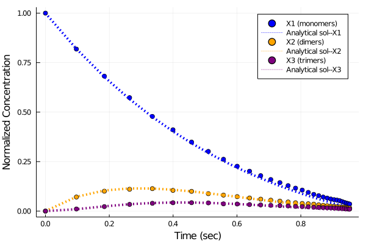

Generating ReactionSystems Programmatically
This tutorial shows how to programmatically construct a ReactionSystem corresponding to the chemistry underlying the Smoluchowski coagulation model using ModelingToolkit/Catalyst. A jump process version of the model is then constructed from the ReactionSystem, and compared to the model's analytical solution obtained by the method of Scott (see also 3).
The Smoluchowski coagulation equation describes a system of reactions in which monomers may collide to form dimers, monomers and dimers may collide to form trimers, and so on. This models a variety of chemical/physical processes, including polymerization and flocculation.
We begin by importing some necessary packages.
using ModelingToolkit, Catalyst, LinearAlgebra
using DiffEqBase, DiffEqJump
using Plots, SpecialFunctionsSuppose the maximum cluster size is N. We assume an initial concentration of monomers, Nₒ, and let uₒ denote the initial number of monomers in the system. We have nr total reactions, and label by V the bulk volume of the system (which plays an important role in the calculation of rate laws since we have bimolecular reactions). Our basic parameters are then
## Parameter
N = 10 # maximum cluster size
Vₒ = (4π/3)*(10e-06*100)^3 # volume of a monomers in cm³
Nₒ = 1e-06/Vₒ # initial conc. = (No. of init. monomers) / bulk volume
uₒ = 10000 # No. of monomers initially
V = uₒ/Nₒ # Bulk volume of system in cm³
integ(x) = Int(floor(x))
n = integ(N/2)
nr = N%2 == 0 ? (n*(n + 1) - n) : (n*(n + 1)) # No. of forward reactionsThe Smoluchowski coagulation equation Wikipedia page illustrates the set of possible reactions that can occur. We can easily enumerate the pairs of multimer reactants that can combine when allowing a maximal cluster size of N monomers. We initialize the volumes of the reactant multimers as volᵢ and volⱼ
# possible pairs of reactant multimers
pair = []
for i = 2:N
push!(pair,[1:integ(i/2) i .- (1:integ(i/2))])
end
pair = vcat(pair...)
vᵢ = @view pair[:,1] # Reactant 1 indices
vⱼ = @view pair[:,2] # Reactant 2 indices
volᵢ = Vₒ*vᵢ # cm⁻³
volⱼ = Vₒ*vⱼ # cm⁻³
sum_vᵢvⱼ = @. vᵢ + vⱼ # Product indexWe next specify the rates (i.e. kernel) at which reactants collide to form products. For simplicity, we allow a user-selected additive kernel or constant kernel. The constants(B and C) are adopted from Scott's paper 2
# set i to 1 for additive kernel, 2 for constant
i = 1
if i==1
B = 1.53e03 # s⁻¹
kv = @. B*(volᵢ + volⱼ)/V # dividing by volume as its a bi-molecular reaction chain
elseif i==2
C = 1.84e-04 # cm³ s⁻¹
kv = fill(C/V, nr)
endWe'll store the reaction rates in pars as Pairs, and set the initial condition that only monomers are present at $t=0$ in u₀map.
# state variables are X, pars stores rate parameters for each rx
@parameters t
@variables k[1:nr] X[1:N](t)
pars = Pair.(collect(k), kv)
# time-span
if i == 1
tspan = (0. ,2000.)
elseif i == 2
tspan = (0. ,350.)
end
# initial condition of monomers
u₀ = zeros(Int64, N)
u₀[1] = uₒ
u₀map = Pair.(collect(X), u₀) # map variable to its initial valueHere we generate the reactions programmatically. We systematically create Catalyst Reactions for each possible reaction shown in the figure on Wikipedia. When vᵢ[n] == vⱼ[n], we set the stoichiometric coefficient of the reactant multimer to two.
# vector to store the Reactions in
rx = []
for n = 1:nr
# for clusters of the same size, double the rate
if (vᵢ[n] == vⱼ[n])
push!(rx, Reaction(k[n], [X[vᵢ[n]]], [X[sum_vᵢvⱼ[n]]], [2], [1]))
else
push!(rx, Reaction(k[n], [X[vᵢ[n]], X[vⱼ[n]]], [X[sum_vᵢvⱼ[n]]],
[1, 1], [1]))
end
end
@named rs = ReactionSystem(rx, t, collect(X), collect(k))We now convert the ReactionSystem into a ModelingToolkit.JumpSystem, and solve it using Gillespie's direct method. For details on other possible solvers (SSAs), see the DifferentialEquations.jl documentation
# solving the system
jumpsys = convert(JumpSystem, rs)
dprob = DiscreteProblem(jumpsys, u₀map, tspan, pars)
jprob = JumpProblem(jumpsys, dprob, Direct(), save_positions=(false,false))
jsol = solve(jprob, SSAStepper(), saveat = tspan[2]/30)Lets check the results for the first three polymers/cluster sizes. We compare to the analytical solution for this system:
# Results for first three polymers...i.e. monomers, dimers and trimers
v_res = [1;2;3]
# comparison with analytical solution
# we only plot the stochastic solution at a small number of points
# to ease distinguishing it from the exact solution
t = jsol.t
sol = zeros(length(v_res), length(t))
if i == 1
ϕ = @. 1 - exp(-B*Nₒ*Vₒ*t)
for j in v_res
sol[j,:] = @. Nₒ*(1 - ϕ)*(((j*ϕ)^(j-1))/gamma(j+1))*exp(-j*ϕ)
end
elseif i == 2
ϕ = @. (C*Nₒ*t)
for j in v_res
sol[j,:] = @. 4Nₒ*((ϕ^(j-1))/((ϕ + 2)^(j+1)))
end
end
# plotting normalised concentration vs analytical solution
default(lw=2, xlabel="Time (sec)")
scatter(ϕ, jsol(t)[1,:]/uₒ, label="X1 (monomers)", markercolor=:blue)
plot!(ϕ, sol[1,:]/Nₒ, line = (:dot,4,:blue), label="Analytical sol--X1")
scatter!(ϕ, jsol(t)[2,:]/uₒ, label="X2 (dimers)", markercolor=:orange)
plot!(ϕ, sol[2,:]/Nₒ, line = (:dot,4,:orange), label="Analytical sol--X2")
scatter!(ϕ, jsol(t)[3,:]/uₒ, label="X3 (trimers)", markercolor=:purple)
plot!(ϕ, sol[3,:]/Nₒ, line = (:dot,4,:purple), label="Analytical sol--X3",
ylabel = "Normalized Concentration")For the additive kernel we find

Sources
- https://en.wikipedia.org/wiki/Smoluchowskicoagulationequation
- Scott, W. T. (1968). Analytic Studies of Cloud Droplet Coalescence I, Journal of Atmospheric Sciences, 25(1), 54-65. Retrieved Feb 18, 2021, from https://journals.ametsoc.org/view/journals/atsc/25/1/1520-046919680250054asocdc20co2.xml
- Ian J. Laurenzi, John D. Bartels, Scott L. Diamond, A General Algorithm for Exact Simulation of Multicomponent Aggregation Processes, Journal of Computational Physics, Volume 177, Issue 2, 2002, Pages 418-449, ISSN 0021-9991, https://doi.org/10.1006/jcph.2002.7017.